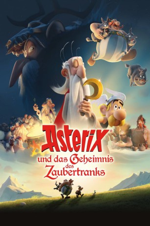

 
 IMDB-Wertung: 6.8 / 10
IMDB-Wertung: 6.8 / 10  Metascore:
Metascore: 
Wir befinden uns im Jahre 50 v.Chr. Ganz Gallien ist von den Römern besetzt... Ganz Gallien? Nein! Das unbeugsame Volk leistet natürlich zu jeder Zeit Widerstand! Der Druide Miraculix sorgt sich um die Zukunft des Dorfes und macht sich gemeinsam mit Asterix und Obelix auf, einen Nachfolger zu finden, dem er das Geheimnis des legendären Zaubertranks anvertrauen kann. Doch auch der hinterhältige Heretix versucht, in den Besitz der magischen Formel zu kommen und schreckt dafür nicht einmal vor einem Pakt mit den Römern zurück. Während Asterix und Obelix auf ihrer Suche nach einem würdigen Druiden-Lehrling ganz Gallien durchqueren, müssen die Frauen das Dorf allein gegen die römischen Soldaten verteidigen. Und die Zaubertrank-Vorräte reichen nicht ewig… Quelle: Universum Film
Jahr: 2018
Dauer: 85 Minuten
FSK: 0
Land: Frankreich Studio: UFATonspuren:
Untertitel: Deutsch,
Auflösung: 1080p (1920x808) Größe: 2877 MB
Genre: Komödie, Abenteuer, Fantasy, Animation/Trick, Familie
Regisseur: Alexandre Astier, Louis Clichy
Drehbuch: René Goscinny, Albert Uderzo, Alexandre Astier, Alexandre Astier
Soundtrack: Philippe Rombi
Darsteller:
 Christian Clavier als Astérix
Christian Clavier als Astérix Guillaume Briat als Obélix
Guillaume Briat als Obélix Alex Lutz als Teleferix
Alex Lutz als Teleferix Alexandre Astier als Oursenplus / Huiledolix / Blodimérix
Alexandre Astier als Oursenplus / Huiledolix / Blodimérix Elie Semoun als Cubitus
Elie Semoun als Cubitus Bernard Alane als Panoramix
Bernard Alane als Panoramix François Morel als Ordralfabétix
François Morel als Ordralfabétix Lionnel Astier als Cetautomatix
Lionnel Astier als Cetautomatix Florence Foresti als Bonemine
Florence Foresti als Bonemine C. Ernst Harth als Obelix
C. Ernst Harth als Obelix Ken Kramer als Asterix
Ken Kramer als Asterix Nicky Naudé als Aepyornix / Fotovoltahix
Nicky Naudé als Aepyornix / FotovoltahixDatei: X:\Kinder Collections\Asterix\Asterix und das Geheimnis des Zaubertranks (2018, FSK0, 1920x808) 3D.mkv seit 13.08.2019
Festplatte: Kinder-Filme+Trick
 Es gibt insgesamt 15 Filme in der Gruppe 'Kinder Collections\Asterix'
Es gibt insgesamt 15 Filme in der Gruppe 'Kinder Collections\Asterix'